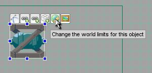
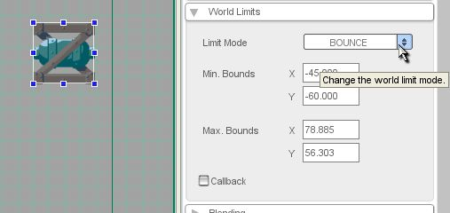

Editing World Limits
| You'll see the widgets appear over it... the fourth one is Change the world limits for this object (as shown in Figure 1). Click it, and the view will zoom out to show you the current world limits of the object, which is shown as a gray rectangle. |
 Figure 1 |
World Limit Explanation
World limits specify the area your object can occupy in the world. When the object hits its limits, it will respond according to its world limit response mode. Every object in your game has its own world limit response settings. To edit those settings, select the object and open the World Limits section in the Edit tab (as shown in Figure 2). Assuming you haven't fiddled with this already, you'll just see the Limit Mode property set to OFF. We won't go too deeply into the Callback checkbox here, but suffice it to say that it is used when you want to script your object's limit response in an onWorldLimit() function.
| World Limit Response Modes: | |
|
OFF: The world
NULL: The world limits are tested, but no action is taken when the object reaches the limits; it just continues on its way. This mode is used in combination with the Callback checkbox to script your own responses to reaching the world limits. BOUNCE: The object bounces off the world limits in a simple, pong-like way and doesn't CLAMP: The object STICKY: The object KILL: The object deletes itself when it touches the world limits. |
|
|
 Figure 2 |
|